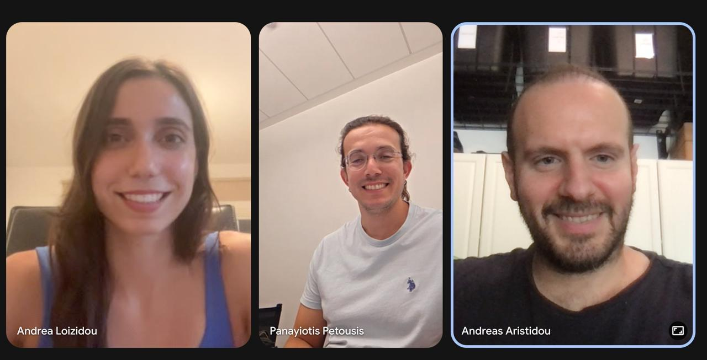
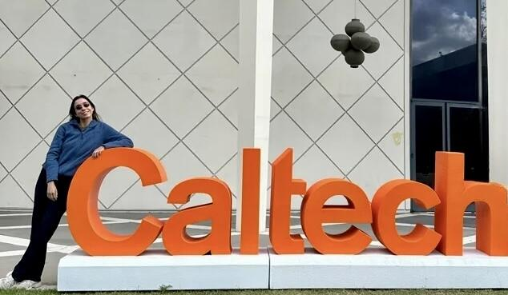

Caltech Longevity Startup Launchpad 2026
ILAMEE turns heart-failure risk into evidence a person can act on.
The Individualized Longevity Agent for Medical Evidence Exploration estimates four-year survival, explains the factors shaping an individual result, and finds validated literature about how those most important factors are associated with reduced or increased chronic heart-failure risk.

The challenge
Good evidence exists. Access to it does not.
Sudden cardiac death accounts for up to half of mortality in chronic heart failure. Heart failure affects an estimated 64 million people globally and half die within five years, yet fewer than 20% of high-risk patients receive formal risk stratification. Existing scores often require a complete laboratory panel and return one unexplained number—without a personalized reading list connecting that result to the underlying evidence.
Project presentation
See ILAMEE in action.
Watch the team’s 90-second walkthrough of the personalized risk, explanation, and evidence-exploration workflow.
Research foundation
Developed on a prospective, multicenter heart-failure cohort.
The core logistic-regression model was developed using the public MUSIC study (MUerte Súbita en Insuficiencia Cardiaca), collected from April 2003 through December 2004. It produces a four-year survival probability from whatever patient data is available and quantifies uncertainty when values are missing.

Three-layer agent
From prediction to personalized evidence.
ILAMEE connects risk modeling, transparent explanation, and literature retrieval in one workflow.
Estimate survival
Logistic regression provides a transparent four-year survival probability and uncertainty for missing values. Cox Proportional Hazards and XGBoost models are ready as deeper-analysis tiers, with the third tier reaching a C-index of 0.753.
Show what matters
SHAP values translate the model output into plain language and identify the personal factors contributing most strongly to the individual risk estimate.
Connect factors to evidence
The user receives validated findings from peer-reviewed literature about how changes in their most important factors are associated with reducing or increasing chronic heart-failure risk. Automated PubMed queries tailor the evidence to the individual profile.
ILAMEE is a hackathon research prototype for evidence exploration and decision support. It is not a medical device and does not replace evaluation or treatment by a qualified clinician.
Technical foundation
Machine learning, explainability, and agentic retrieval.
PythonXGBoostCox PHlifelinesRandom Survival Forestscikit-survivalSHAPscikit-learnClaudeLangChainPubMed APIReact NativeExpoTypeScriptZustandFastshot AI
The team
Built by RootSquare.
Panayiotis Petousis, PhD
Biomedical Engineering, UCLA · Senior Data Scientist, UCLA Health
Andrea Loizidou, MS
Data Science, FIU · Data Scientist, XM
Andreas Aristidou, PhD, MS
Economics & Computer Science, USC · Senior Data Scientist, Netflix
Submitted to Devpost by the RootSquare team for the Longevity Startup Launchpad 2026.
Healthcare AI
Building a high-stakes AI workflow?
We design explainable systems that connect prediction, evidence, and human judgment.